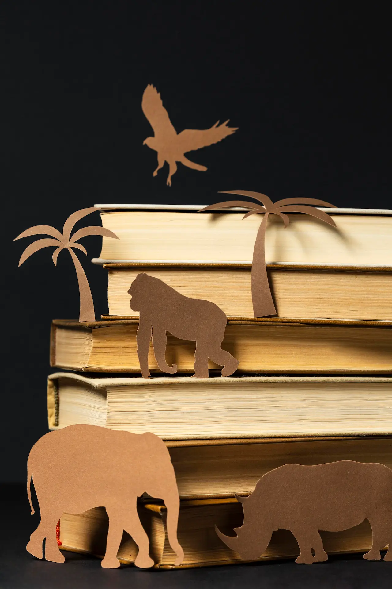

Velkommen til mit portfolio
.Dette website viser mit arbejde som multimediedesigner og giver et indblik i min kreative proces og mine kompetencer inden for design og digitale løsninger. Mit fokus ligger på at udvikle kreative og funktionelle løsninger, som ikke kun ser godt ud, men også skaber værdi for brugeren. Uanset om det handler om grafisk design, eller webudvikling, stræber jeg efter at kombinere æstetik og funktionalitet for at opnå det bedste resultat. Her kan du finde eksempler på mit arbejde, projekter jeg har udviklet, og se, hvordan jeg arbejder med alt fra idéudvikling til færdige produkter.